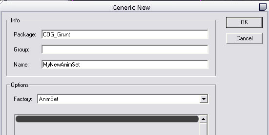

UDN
Search public documentation:
ImportingAnimationsTutorialCH
English Translation
日本語訳
한국어
Interested in the Unreal Engine?
Visit the Unreal Technology site.
Looking for jobs and company info?
Check out the Epic games site.
Questions about support via UDN?
Contact the UDN Staff
日本語訳
한국어
Interested in the Unreal Engine?
Visit the Unreal Technology site.
Looking for jobs and company info?
Check out the Epic games site.
Questions about support via UDN?
Contact the UDN Staff
导入动画指南
概述
本文档是对虚幻引擎3中美术工作流程的简介，因为它应用于动画。我们的主要注意力将直接指向新引擎特有的新功能及流程。在新引擎中没有改变的功能，我们在UDN的其它地方进行讨论。
导出内容
在虚幻引擎3中，动画序列通过使用ActorX插件从Maya或Max中导出。
将内容导入到引擎
导入动画
在虚幻引擎3中，PSA文件是作为AnimSet(动画集)对象中的许多AnimSequence (动画序列)导入的。和材质或者静态网格物体一样，AnimSets(动画集)以和它们同样的方式出现在通用浏览器中。
创建新的动画集
在您可以导入一个PSA文件之前，您需要为它们创建一个AnimSet(动画集)。有几种创建新的动画集的方法：- 在通用浏览器中，右击背景并选择New AnimSet(新建动画集)。输入您的新建动画集及其所在的包的名称。

- 从通用浏览器的File(文件)菜单中，选择New(新建)，然后在Factory组合框中选择AnimSet(动画集)。输入您的新建动画集及其所在包的名称。

- 如果您已经打开了AnimSetViewer(动画集查看器)，您可以从File (文件)菜单中选择New AnimSet(新建动画集)。同样，输入新建的动画集及其所在包的名称。

打开AnimSetEditor(动画集编辑器)
您可以使用AnimSetEditor (动画集编辑器)工具把PSA文件导入到现有的AnimSet中。您可以使用以下方法打开工具：- 在通用浏览器中双击AnimSet(动画集)或者从它的关联菜单中选择'AnimSet Viewer(动画集查看器)'。它将会为那个选中的动画集打开动画集查看器，并从那些已加载的SkeletalMesh(骨架网格物体)中找出一个合适的骨架网格物体，在其上面进行播放。
- 双击一个SkeletalMesh(骨架网格物体)或者从关联菜单中选择'AnimSet Viewer(动画集查看器)'。如果您的AnimSet(动画集)可以在选中的网格物体上进行播放，它将出现在左侧的AnimSet(动画集)组合框中。
导入您的PSA文件
一旦选中了您要导入动画到其中的AnimSet(动画集)，从File(文件)菜单中选择Import PSA(导入PSA)。然后选择您要导入的PSA文件并点击OK(确定)。您应该看到新的序列被添加到左侧的序列列表框中。 当您有一个新的AnimSet(动画集)时，您决定导入的第一个动画为您的AnimSet(动画集)定义了'track table(轨迹表格)'。您导入的所有的序列动画都将符合这个表格。如果您导入一个PSA文件，但它包含不在目标AnimSet(动画集)轨迹表格中的轨迹时，它将会扩展轨迹表格来包含这个新的名称并提示以下信息：Extra track (...) found in PSA but not in AnimSet.(在PSA中发现了额外的轨迹(...)但该轨迹不存在于动画集中。) Would you like to add this track to all existing animations using the selected SkeletalMesh reference pose? （外部轨迹(...)，可以在PSA中找到但是不能在AnimSet中找到。您想使用选中的SkeletalMesh参考姿势把这个轨迹添加到现有的动画中吗？）因为在一个AnimSet(动画集)中的所有AnimSequences(动画序列)必须有同样数量的轨迹，它也必须在动画集中为所有的现有AnimSequences(动画序列)‘创建’一个轨迹。它通过使用选中的SkeletalMesh(骨架网格物体)的参考姿势来完成这个功能。相反，如果您尝试并导入PSA文件，但是它丢失了一个在目标AnimSet(动画集)表格中存在的轨迹，您将会获得以下提示信息：
Could not find needed track (...) for this AnimSet.(不能为动画集找到所需的轨迹(...)) Would you like to use the selected SkeletalMesh reference pose to create the track? （从能为这个AnimSet(动画集)找到需要的轨迹(...)。您想使用选中的骨架网格物体的参考姿势来创建轨迹吗？）这样将会使用选中骨架网格物体的参考姿势为那个AnimSequence(动画序列)创建一个新的轨迹。 当导入一个用于创建叠加动画的动画(无论是一个Target Pose(目标姿势) 或Base Pose(基本姿势))时，那么编辑器将会自动提示用户重新构建相关的Additive Animations(叠加动画)。这是2009年12月版本的一个新功能。如果您的版本已经升级，并且您的动画没有必要的引用，您可以运行FixAdditiveReferences命令开关来尝试重新构建它们。 关于叠加型动画的更多信息可以在这里获得： 动画概述#叠加型动画。